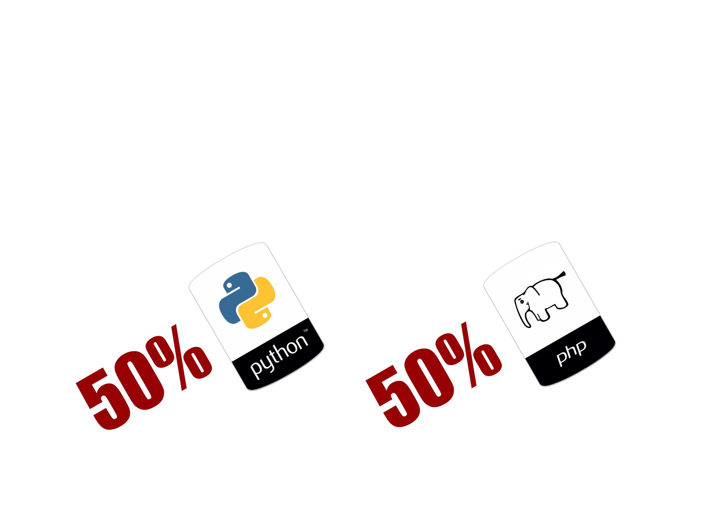
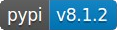

Scraping de contenidos e integración en Drupal8
Tomás Vilariño Fidalgo
Ingeniero Informático (UVigo)
Técnico Especialista en Desarrollo Web (UJI)
Trabajo en
Oficina Web de la USC
actualmente en la migración de la web www.usc.es a Drupal 8.
Situación actual
Migración web USC.es
Sitio con miles de páginas
Nos centramos en exportar páginas "estáticas"
Compleja exportación datos
Mantener misma estructura navegación (SEO)
Primera idea
Utilizar soluciones de exportación del CMS actual, o acceso directo a base de datos
Problemas
- Acceso a base de datos implica "gestiones" con departamento de sistemas
- Desconocimiento estructura base de datos, elevada curva de aprendizaje
- El actual CMS utiliza un sistema de ficheros en base de datos (VFS)
Segunda idea
Acceder directamente a través de la web y extraer los contenidos (scraping).
Prueba de concepto I
Utilizar Goutte para recuperar y extraer contenidos.
Insertar en Drupal a través de un comando Drush usando Entity API.
Todo implementado en PHP con componentes alternativos Guzzle y DOMCrawler.


Prueba de concepto I (inconvenientes)
La idea funciona para una páxina pero presenta inconvenientes para rastrear todo un sitio.
Es necesario implementar:
- Gestión de la cola de peticiones pendientes
- Rastreo de enlaces y gestión de duplicados
- Almacenamiento de los contenidos extraídos
- Procesamiento multihilo
- Gestión jobs: pausing and resuming crawls
- Estadísticas, tratamiento imágenes, ficheros, gestión de redirecciones, errores 500...
Prueba de concepto II
Necesitamos algo más que un API de scraping de páginas.
- Scraping, extracción de contenidos
- Crawling, bot para seguir la navegación
- Storing, almacenar los contenidos
- Plumbing, otras tareas de «fontanería»
Prueba de concepto II
 Encontramos un framework más completo centrado en la programación de arañas.
Encontramos un framework más completo centrado en la programación de arañas.
Usamos framework Scrapy y obtenemos contenidos en formato JSON. Posteriormente con Drush los integramos en Drupal.

Antes de continuar
Mi nivel de Python es bajo (tirando a nulo), sin embargo en una tarde estás programando arañas.
Instalación framework scraping (Scrapy)
Instalamos scrapy usando pip
sudo pip install scrapy
Usamos el gestor de paquetes de Python pip

Requisitos previos (Ubuntu)
sudo apt-get install python-dev python-pip libxml2-dev \
libxslt1-dev zlib1g-dev libffi-dev libssl-dev
Probamos instalación de scrapy
Iniciamos proyecto de scrapy
Creamos un proyecto de scrapy con la opción startproject
$ scrapy startproject usc
Estructura del proyecto
.
├── scrapy.cfg → Fichero de scrapy (nombre de proyecto)
└── paxinas
├── __init__.py
├── items.py → Clase con la definición de los ítems a extraer
├── pipelines.py → Clase que procesa, valida, almacena, ... ítems
├── settings.py → Configuración de opciones del proyecto
└── spiders
└── __init__.py
Crear una araña
Desde línea de comandos podemos crear el "esqueleto" de la araña con la opción genspider
Scrapy viene con varias plantillas para implementar arañas.
$ scrapy genspider --list
Available templates:
basic
crawl
csvfeed
xmlfeed
Tipos de crawlers
- basic
- La clase hereda de
scrapy.Spider, es la implementación más sencilla. - crawl
- La clase hereda de
scrapy.CrawlSpider. Por medio de unas reglas busca enlaces y los pone en la cola. - xmlfeed
- La clase hereda de
XMLFeedSpider. Diseñado para parsear feeds XML. - csvfeed
- La clase hereda de
XMLFeedSpider. Similar a XMLFeedSpider para documentos CSV.
Crear una araña II
$ scrapy genspider -t crawl paxinas
Código de la clase generada
import scrapy
from scrapy.linkextractors import LinkExtractor
from scrapy.spiders import CrawlSpider, Rule
class PaxinasSpider(CrawlSpider):
name = 'paxinas'
allowed_domains = ['usc.es']
start_urls = ['http://www.usc.es/']
rules = (
Rule(LinkExtractor(allow=r'Items/'),
callback='parse_item', follow=True),)
def parse_item(self, response):
pass
Definimos nuestras reglas
rules = (
Rule(
LinkExtractor(
# xpathBasePath es una expresión regular por línea de comandos
restrict_xpaths=xpathBasePath,
deny=[r'/(en|es)/', r'(calMonth=|calYear=)']
),
callback='process_item',
follow=True
),
)
Ítems a extraer (items.py)
Definimos clase PaxinasItem con los campos que vamos a recuperar.

Selectores
| CSS (response.css) | XPath (response.xpath) |
|---|---|
| title::text | //title/text() |
| base::attr(href) | //base/@href |
| a[href*=image]::attr(href) | //a[contains(@href, "image")]/@href |
También con expresiones regulares response.re().(*) Portia, proyecto que permite extraer de forma visual.
scrapy shell http://...
Implementamos parse_item
Utilizamos scrapy shell para hacer pruebas de los selectores
class PaxinasSpider(CrawlSpider):
# ....
def parse_item(self, response):
# Comprobaciones: 'text/html' not in response.headers['Content-Type']
item = PaxinasItem()
item['url'] = response.url
item['title'] = response.xpath('//title/text()').extract_first()
item['body'] = response.body
item['keywords'] = response.xpath('//meta[@name="keywords"]/@content')
.extract_first()
# Búsqueda de imágenes y ficheros
# ....
item['image_urls'] = images
item['files_urls'] = files
return item
Configurar pipelines ficheros e imágenes
Necesitamos configurar ITEM_PIPELINES para dispones del comportamiento automático de los campos image_urls y file_urls.
ITEM_PIPELINES = {
'scrapy.pipelines.images.ImagesPipeline': 1,
'scrapy.pipelines.files.FilesPipeline': 1,
}
dir = os.path.dirname(os.path.abspath(__file__))
IMAGES_STORE = dir + '/../assets/images'
FILES_STORE = dir + '/../assets/files'
Ejecutamos crawler
Lanzamos para que guarde en formato json (-o xerencia.json), con parámetros adicionales (-a), incluimos la opción de parar y reanudar el crawler (-s JOBDIR) y guardanmos un log.
scrapy crawl paxinas -o xerencia.json \
-a start_url='http://www.usc.es/gl/goberno/xerencia/' \
-a base_path='/goberno/xerencia/' \
-s JOBDIR=crawls/paxinas-1 \
--logfile=xerencia.log
Mapeo de campos
Tenemos que mapear los campos del documento JSON a los campos del tipo de contenido.
Estructura JSON
(versión reducida)
[{
"title": "Servizo de Xestión Académica - USC",
"url": "http://www.usc.es/gl/servizos/sxa",
"keywords": "usc, universidade, santiago , compostela, ...",
"contidos": "...
",
"image_urls": ["http://www.usc.es/gl/servizos/sxa/imaxes/coie.jpg"],
"file_urls": ["http://www.usc.es/gl/servizos/sxa/4_Vacantes_Master.pdf"],
"images": [{
"url": "http://www.usc.es/gl/servizos/sxa/imaxes/coie.jpg",
"path": "full/7eb49e6658ab0f2e7ed894027529dfaeebd9346a.jpg"}],
"files": [{
"url": "http://www.usc.es/gl/servizos/sxa//4_Vacantes_Master.pdf",
"path": "full/67063aa5e3f072742ce4d2c066b973d1ceca64c8.pdf"}]
}, {...}]Integrar en Drupal I
Creamos un módulo con un fichero module_name.drush.inc
/**
* Implements hook_drush_command().
*/
function usc_front_drush_command() {
$items['fe-import-pages'] = [
'callback' => 'usc_front_import_pages',
'description' => 'Importar páginas del sitio USC.es (formato JSON).',
'aliases' => array('feip'),
'arguments' => [
'input' => 'Fichero JSON con el contenido de las páginas a cargar.',],
'options' => [
'assets' => 'Ruta al directorio de assets (files e images)',
'menu_name' => 'Nombre del menú a generar',
],
];
}Integrar en Drupal II
Recorrer los ítems del array json e ir insertando el contenido
$data = json_decode(file_get_contents($input), TRUE);
/** @var \Drupal\Core\Path\AliasStorage $aliasStorage */
$aliasStorage = \Drupal::service('path.alias_storage');
foreach($data as $item) {
if (!$aliasStorage->aliasExists($link, $langcode)) {
$values = [
'type' => 'usc_front_page_general',
'title' => $item['titulo'],
// ...
'body' => ['value' => $item['contidos'],],
'field_fe_description' => $item['description'],
];
}
// ... tratar imágenes y ficheros
}Ficheros gestionados
Recorrer arrays de images y files, y damos de alta en Drupal (tabla: file_managed)
foreach($item['images'] as $img) {
$path = 'public://' . $img['url'];
$imagename = realpath($assets . '/images/' . $img['path']);
// validaciones omitidas, file_exists, ...
$image_stream = file_get_contents($imagename);
if(!file_prepare_directory(dirname($path))) {
drupal_mkdir($dir, NULL, True);
}
$file = file_save_data($image_stream, $path, FILE_EXISTS_REPLACE);
// $alternativeText = $alt !== null? $alt: t('Imaxe');
$image_id[] = [
'target_id' => $file->id(),
'alt' => $alternativeText,
];
// Reemplazar los href en el contenido ($values['body'])
}
$values['field_fe_image'] = $image_id; // array con los IDs de las imágenes
Otros campos (taxonomías)
Crear taxonomías para campo keywords
$terms = explode(',', $item['keywords']);
foreach($terms as $term) {
$termId = $storage->getQuery()
->condition('vid', $keywords_vid)
->condition('name', $term)->execute();
if (empty($termId)) {
$termEntity = \Drupal\taxonomy\Entity\Term::create([
'vid' => $keywords_vid,
'name' => $term,
]);
$termEntity->save();
$termId = [$termEntity->id() => $termEntity->id()];
}
$tids[] = ['target_id' => current($termId),];
}
$values['field_fe_keywords'] = $tids;Integrar con menús I
Comprobar que existe un menú, sino crearlo
// $menu_name → nombre del menú
$nids = \Drupal::entityQuery('menu')
->condition('id', $menu_name)->execute();
if (empty($nids)) { // Crear menú si no existe
$menu_desc = t('Menú') . ' ' . ucwords(str_replace('menu-', '', $menu_name));
/** @var \Drupal\system\Entity\Menu $menu */
$menu = entity_create('menu', array(
'id' => $menu_name,
'label' => $menu_desc,
'description' => $menu_desc,
'langcode' => 'gl',
));
$menu->save();
}
Integrar con menús II
Crear ítems del menú
// Comprobar se xa existe
$nids = \Drupal::entityQuery('menu_link_content')
->condition('default_langcode', 1)->condition('title', $item['titulo'])
->condition('link.uri', 'internal:' . $link)
->condition('menu_name', $menu_name)->execute();
if (count($nids) === 0) {
$menuData = [
'title' => $item['titulo'],
'menu_name' => $menu_name,
// ...
'link' => ['uri' => 'internal:' . $link], ];
$menu_link_content = MenuLinkContent::create($menuData);
$menu_link_content->save();
}
Otras alternativas
- Usar el módulo migrate para integrar los contenidos.
- Insertar desde código Python los contenidos directamente en la base de datos.
BONUS: Implementar pipeline propio
import pymongo
# import ...
class PaxinasPipeline(object):
def __init__(self):
connection = pymongo.MongoClient(
settings['MONGODB_SERVER'],
settings['MONGODB_PORT']
)
db = connection[settings['MONGODB_DB']]
self.collection = db[settings['MONGODB_COLLECTION']]
def process_item(self, item, spider):
for data in item:
if not data:
raise DropItem("Missing data!")
self.collection.update({'url': item['url']}, dict(item), upsert=True)
return item
BONUS: Configuramos pipeline MongoDB
ITEM_PIPELINES = {
'scrapy.pipelines.images.ImagesPipeline': 1,
'scrapy.pipelines.files.FilesPipeline': 1,
'paxinas.pipelines.PaxinasPipeline': 1,
}
dir = os.path.dirname(os.path.abspath(__file__))
IMAGES_STORE = dir + '/../assets/images'
FILES_STORE = dir + '/../assets/files'
MONGODB_SERVER = "localhost"
MONGODB_PORT = 27017
MONGODB_DB = "usc"
MONGODB_COLLECTION = "paxinas"
BONUS: Try yourself

Esta presentación está disponible en: vifito.github.io/drupalday2016/
También el repositorio con: github.com/vifito/drupalday2016
github.com/vifito/drupalday2016
└── demo
├── module
│ └── drupalday
└── scrapy
└── drupalday
BONUS: Try yourself (demo)
La demo incluye una araña con Scrapy que recupera los artículos de Drupal 8 de Sitepoint (https://www.sitepoint.com/tag/drupal-8/). Y un módulo de Drupal para insertar los artículos.
En el directorio scrapy ejecutar launch.sh o:
scrapy crawl sitepoint -o drupal.json --logfile=drupal.log
Copiar el fichero drupal.json y el directorio assets a la raiz de una instalación drupal y ejecutar::
drush ddi drupal.json --assets=./assets
FIN
Visítanos en breve http://www.usc.gal